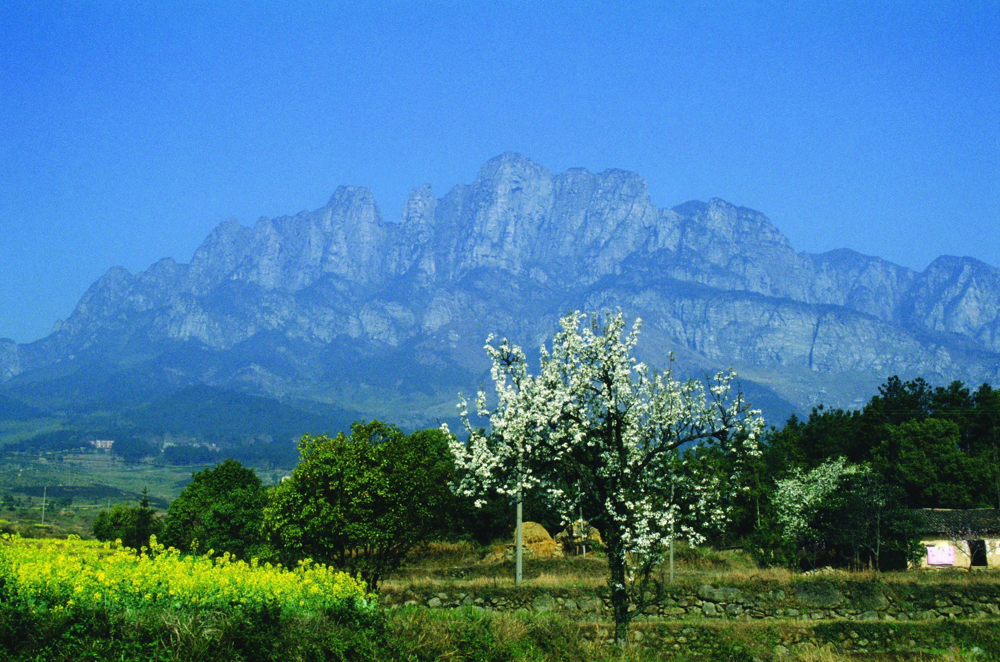
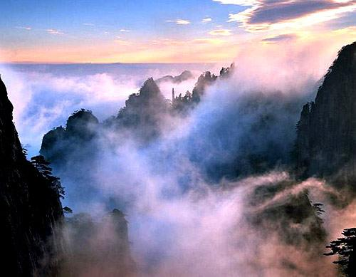
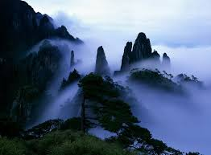
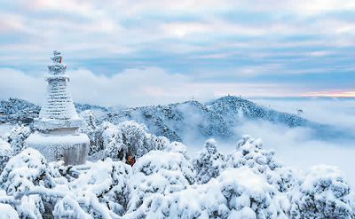

在山水、云雾、瀑布与湖光之间，庐山展现出独特的自然层次与东方审美。
庐山的瀑布从山谷间倾泻而下，亭阁掩映在林木之间，形成山水与建筑相互呼应的古典画面。
湖面倒映着天空与群山，蓝天、白云、山影与水色交织，呈现出清澈、开阔而宁静的自然气质。

秋季的庐山层林尽染，溪流穿过岩石与林间，展现出四季变化中的细腻美感。
峡谷深处，瀑布、岩石与碧绿水潭构成灵动的自然景观，让人感受到庐山山水的壮美与清幽。
庐山不仅拥有秀美的自然景观，也拥有深厚的人文历史。历代文人墨客曾在这里留下诗文、游记与文化记忆，使庐山成为自然风景与文化精神交织的地方。山中的建筑、道路、亭台与湖泊，共同构成了独特的庐山文化景观。
飞瀑、湖泊、山谷与云雾共同构成庐山丰富的自然层次。
庐山承载着丰富的人文故事，成为历代文人书写山水精神的重要场所。
这里的山水不仅是风景，也是一种东方审美与文化想象。
每一次抵达庐山，都是一次对自然、历史与自我的重新观察。
以旅行画册的方式，记录庐山的不同风景片段。

庐山溪流
庐山远山伴随轻柔的背景音乐，进入庐山山水之间的旅行氛围。
一曲山间回响，带您感受庐山的云雾、飞瀑与诗意自然。